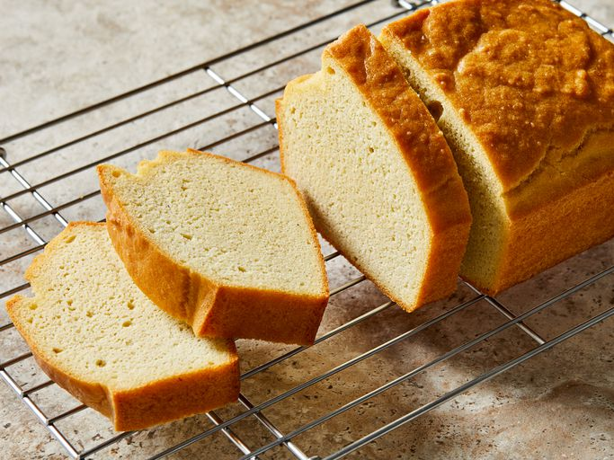

Keto Bread

This is the best keto bread recipe. It's a delicious low-carb bread that couldn't be any easier to make. Baked to perfection, it is ideal for slicing and making toast or sandwiches.
Ingredients
- cooking spray
- 7 large eggs, at room temperature
- ½ cup butter, melted and cooled
- 2 tablespoons olive oil
- 2 cups blanched almond flour
- 1 teaspoon baking powder
- ½ teaspoon xanthan gum
- ½ teaspoon sea salt
Steps
- Gather all ingredients.
- Preheat the oven to 350 degrees F (175 degrees C). Grease a silicone loaf pan with cooking spray.
- Whisk eggs in a bowl until smooth and creamy, about 3 minutes. Add melted butter and olive oil; mix until well combined.
- Combine almond flour, baking powder, xanthan gum, and salt in a separate bowl; mix well. Add gradually to the egg mixture, mixing well until a thick batter is formed.
- Pour batter into the prepared pan and smooth the top with a spatula.
- Bake in the preheated oven until a toothpick inserted into the center comes out clean, about 45 minutes.